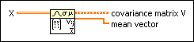
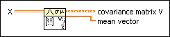

Covariance Matrix VI
Owning Palette: Probability & Statistics VIs
Requires: Full Development System
Computes the covariance matrix of the input sequence X.

 Add to the block diagram Add to the block diagram |
 Find on the palette Find on the palette |
Owning Palette: Probability & Statistics VIs
Requires: Full Development System
Computes the covariance matrix of the input sequence X.

| Add to the block diagram |
Find on the palette |
Given m vectors of observed samples where the ith column contains the variate xi, the covariance matrix is defined as:
Vij = cov(xi, xj) = (xi – µi)(xj – µj)
where µi is the mean of variate xi. Each element Vij of covariance matrix V is the covariance between variates xi and xj. The diagonal of covariance matrix V contains the standard variances of each xi variate.
mean vector returns the computed mean of each variate as shown by the following equation:
mean vectori = µi